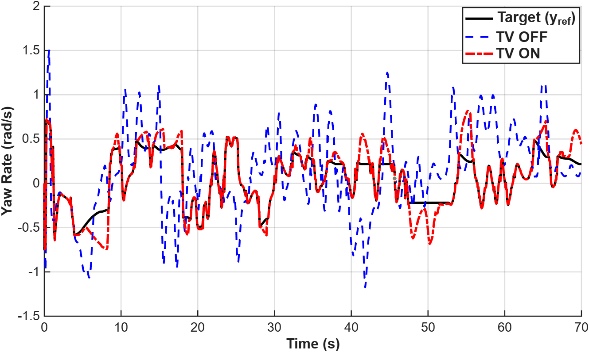
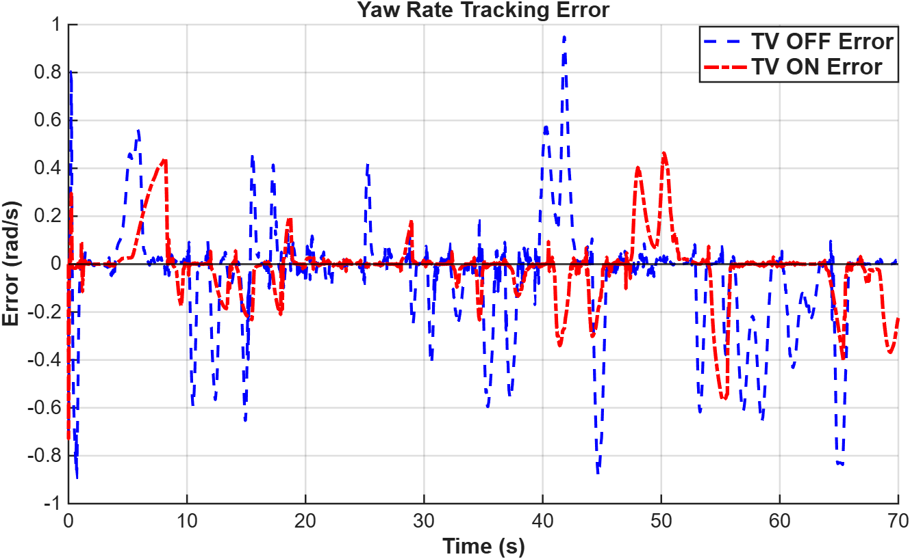
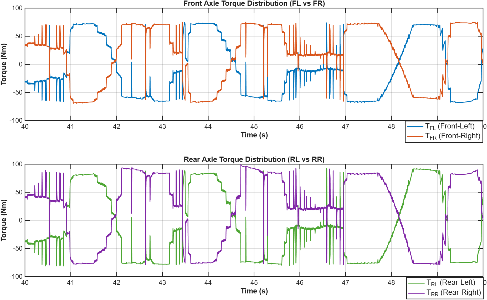
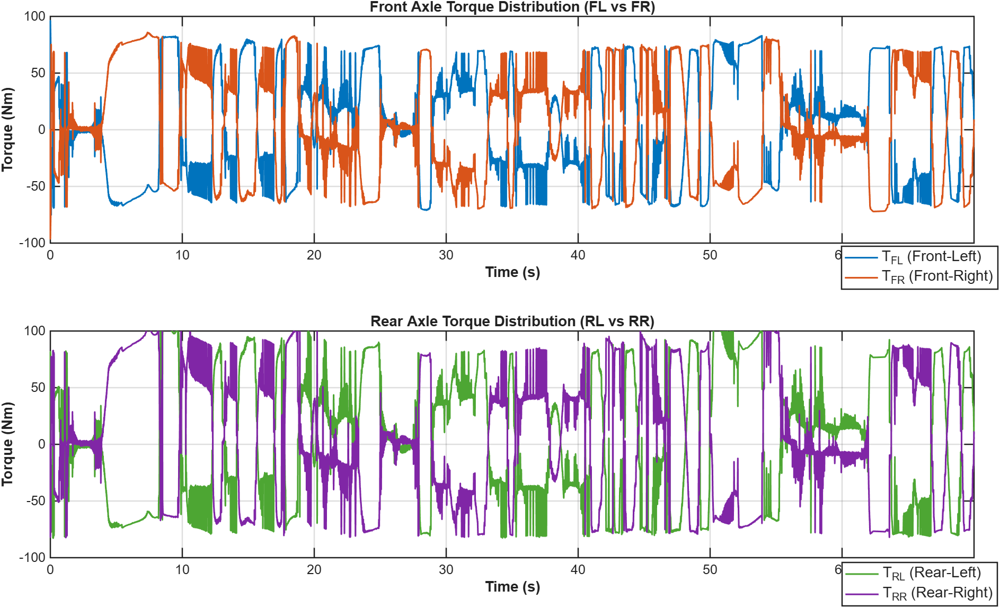

4륜 독립 구동(4WID) 전기차의 선회 한계 극복과 실시간 임베디드 제어 검증의 필요성
고속 코너링 주행 중에는 횡가속도에 의해 차량의 좌·우 및 전·후륜에 동적 수직하중(Dynamic Vertical Load) 변동이 크게 발생합니다. 이때 네 바퀴에 동일한 구동 토크를 인가하는 기존 방식은 하중이 감소한 내측 타이어의 슬립(Slip)을 유발하고, 결과적으로 차량이 선회 바깥쪽으로 밀리는 언더스티어(Understeer)와 주행 경로 이탈을 초래합니다.
본 연구에서는 4륜 독립 구동 자작 전기차를 대상으로 실시간 동적 수직하중 이동과 윤거 기하학적 구조를 반영한 계층형 토크 벡터링(Torque Vectoring) 제어 알고리즘을 제안합니다. MATLAB/Simulink 기반의 선행 시뮬레이션 검증을 수행한 뒤, 실제 마이크로컨트롤러(Arduino Due) 타겟 보드에 제어 로직을 탑재하여 실시간 연산 및 폐루프(Closed-Loop) 추종 성능을 최종 검증하였습니다.
상·하위 계층형 토크 벡터링 제어 아키텍처 및 파제카(Pacejka) 비선형 타이어 기반 차량 플랜트 설계
제어 시스템은 조향각과 차속으로부터 이상적인 목표 요레이트를 산출하고 보정 요 모멘트를 계산하는 상위 제어기와, 동적 하중 이동 비율 및 윤거 기하 구조를 반영해 4바퀴에 독립 토크를 배분하는 하위 제어기로 구성됩니다.
선형 2-자유도(2-DOF) 상태공간 모델을 통해 조향각과 차속 입력에 따른 목표 요레이트를 도출한 뒤, 동적 수직하중 비율($W_f, W_r$)과 윤거($t_f, t_r$)를 결합하여 각 바퀴의 최적 구동 토크를 산출합니다.
※ $T_{\text{base}}$: 기본 구동 토크, $M_z$: 필요 요 모멘트, $W_{f,r}$: 전·후륜 하중 비율, $r_{\text{eff}}$: 유효 타이어 반경
구동 토크 입력으로 발생한 휠 슬립(Slip Ratio/Angle)과 실시간 하중 이동($a_x, a_y \rightarrow F_z$) 데이터를 파제카 매직 포뮬러(Magic Formula)에 대입해 비선형 타이어 접지력을 산출하고, 마찰 타원(Friction Ellipse) 한계 내에서 뉴턴-오일러 방정식을 적분하여 차체 거동을 모사했습니다.
※ 타이어 마찰 포화 및 종·횡력 결합 한계를 반영한 정밀 차량 동역학 플랜트 구현
Pure Pursuit 궤적 추종 기반 짐카나(Gymkhana) 코너링 시뮬레이션 성능 분석




| 시뮬레이션 분석 지표 | 결과 수치 및 특성 |
|---|---|
| 요레이트 추종 RMSE 감소 | 0.2427 rad/s → 0.1391 rad/s (42.69% 개선) |
| 전/후륜 최대 좌우 토크 차이 | 전륜: 142.30 Nm / 후륜: 176.12 Nm |
| 모터 출력 제한 (Actuator Limit) | 물리적 한계인 ±164 Nm 이내 완벽 제한 |
| 전/후륜 최대 토크 인가 비율 | 1 : 1.33 (가속·선회 시 후륜 하중 이동 반영) |
실차 주행 시험을 대체하는 임베디드 타겟 보드 기반 실시간 PIL(Processor-in-the-Loop) 검증 환경 구축
본 프로젝트는 초기 계획 단계에서 실차 적용을 목표로 하였으나, 하드웨어 안전성 및 시험 환경 제약을 고려하여 실차 주행 대신 실제 차량 제어기 역할을 수행하는 임베디드 보드(Arduino Due) 기반 실시간 하드웨어 검증으로 최종 실증을 진행하였습니다.
Simulink로 설계한 상위 요 모멘트 연산기 및 하위 4륜 토크 분배 제어 블록을 C 코드로 컴파일하여 Arduino Due (32-bit ARM Cortex-M3, 84 MHz) 플래시 메모리에 직접 업로드했습니다.
Host PC의 차량 동역학 플랜트 모델이 목표 요레이트와 현재 차량 상태(요레이트)를 USB 직렬 통신으로 아두이노에 전송하면, 아두이노가 실제 연산한 4륜 구동 토크 지령을 다시 PC 플랜트로 피드백합니다.
단순 PC 연산과 달리 실제 MCU의 고정 샘플링 주기(100 Hz), 부동소수점 연산 속도, 통신 지연(Latency)이 포함된 환경에서도 제어기가 발산 없이 안정적으로 동작함을 검증했습니다.
Arduino Due PIL 기반 실시간 제어 결과(TV ON)와 미제어(TV OFF)의 정량·시각적 비교
| 아두이노 검증 지표 | TV OFF | TV ON (Arduino) |
|---|---|---|
| 구동 토크 방식 | 4륜 균등 배분 | 실시간 비대칭 제어 |
| 요레이트 RMSE | 0.4932 rad/s | 0.1397 rad/s |
| RMSE 오차 개선율 | 기준 (Baseline) | 71.7% 감소 |
| 급선회 경로 추종성 | 언더스티어·궤적 이탈 | 목표 중심선 안정 추종 |
연구 성과 요약 및 향후 연구 방향